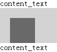

RB1005: IE6 IE7 IE8(Q) 中父元素或子元素触发 hasLayout 时子元素的 margin 值与期望值不符
标准参考
无
问题描述
在 IE6 IE7 IE8(Q)下，容器触发 hasLayout 导致其浮动子元素 'margin-bottom' 消失。
造成的影响
此问题导致的边距消失可能影响到页面的布局，如段落过于紧凑，甚至是文字重叠。
受影响的浏览器
| IE6 IE7 IE8(Q) |
|---|
问题分析
分析以下代码：
<span>content_text</span>
<div style="zoom:1; overflow:hidden; background:lightgrey;">
<div style="float:left; width:50px; height:50px; margin:20px; background:dimgray;"></div>
</div>
<span>content_text</span>
测试代码中 DIV 容器内包含一个左浮动元素，左浮动元素宽度和高度均为50px，四个方向均有20px的边距。容器设置了 'zoom:1; overflow:hidden;' 。
各浏览器表现如下：
| IE6 IE7 IE8(Q) | IE8(S) Chrome Safari Firefox Opera |
|---|---|
|  |  |
可见，
- 在 IE6 IE7 IE8(Q)中，容器 DIV 的 'zoom:1' 触发了 hasLayout，其内部浮动子元素也参与到了容器的高度计算之中。但是浮动子元素设置的 'margin-bottom' 消失；
- 在其他浏览器中，容器的 'overflow:hidden' 创建了新的 Block Formatting Context ，同样，其内部浮动子元素也参与到了容器的高度计算之中。浮动子元素的四个方向的 margin 均正常。
解决方案
为容器显式地设置高度。若容器高度不定，则要避免在触发了 hasLayout 的容器内的浮动子元素上设置 'margin-bottom' 特性，可以通过为容器设置 'padding-bottom' 达到相似的效果。
参见
知识库
相关问题
测试环境
| 操作系统版本: | Windows 7 Ultimate build 7600 |
|---|---|
| 浏览器版本: | IE6 IE7 IE8 Firefox 3.6 Chrome 4.0.302.3 dev Safari 4.0.4 Opera 10.60 |
| 测试页面: | RB1005.html |
| 本文更新时间: | 2010-07-22 |
关键字
float margin 浮动 hasLayout Block Formatting Context 清除